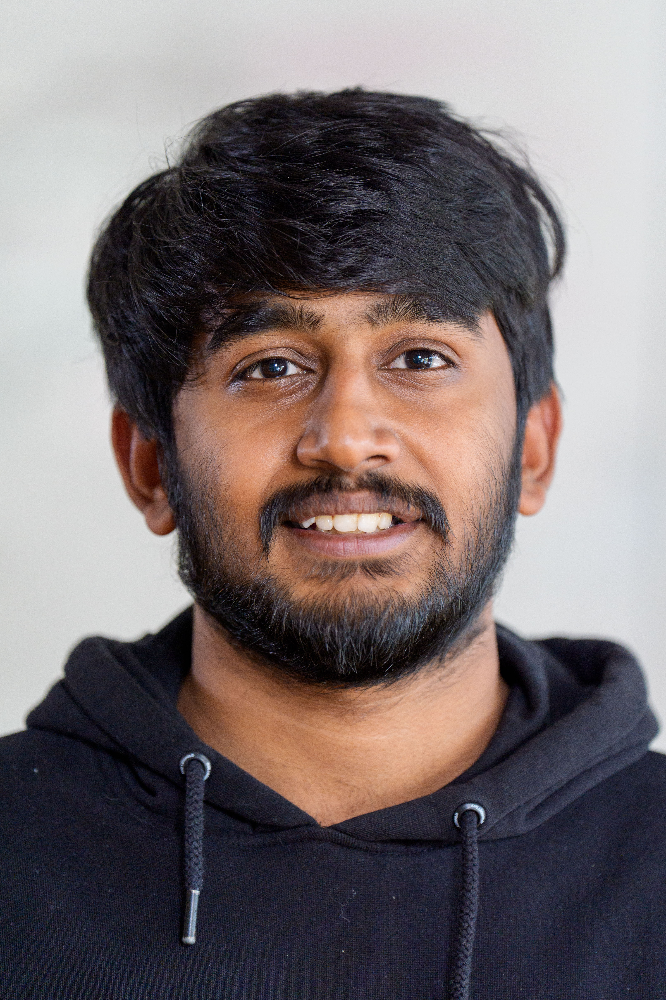

About Me
Hi, I'm Sushil Kumar, a graduate of Albert Ludwigs University of Freiburg, currently working on large-range music generation at MPI-IS Tuebingen.
Additionally, I worked as a Hiwi at Fraunhofer ISE, where I'm involved in data scraping from PDFs. Before joining ISE, I had the opportunity to work in the Responsible AI group at MPI-SP under Asia Beiga and Lin Kyi.
My interests lie in Deep Learning in Multimodal and Generative AI.
Connect: | | | | (uni)
Education
- Masters in Computer Science, Albert Ludwigs University of Freiburg,
- Bachelors in Computer Science, PESIT-BSC, 2021
Work Experience
-
Research Intern, Max Planck Institute for Intelligent Systems (Nov 2024 - )
Supervisor: Prof. Dr. Antonio Orvieto
- Research Assistant, Fraunhofer-Institut für Solare Energiesysteme ISE (May 2023 - )
-
Research Assistant, Max Planck Institute for Security and Privacy (Apr 2022 - Mar 2023)
Supervisor: Prof. Dr. Asia Beiga
Advisor: Lin Kyi
-
Machine Learning Intern, Tao Automation (Jun 2020 - Aug 2020, Feb 2021 - Mar 2021)
Mentor: Amit Rajan